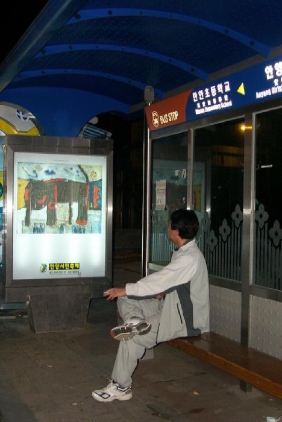
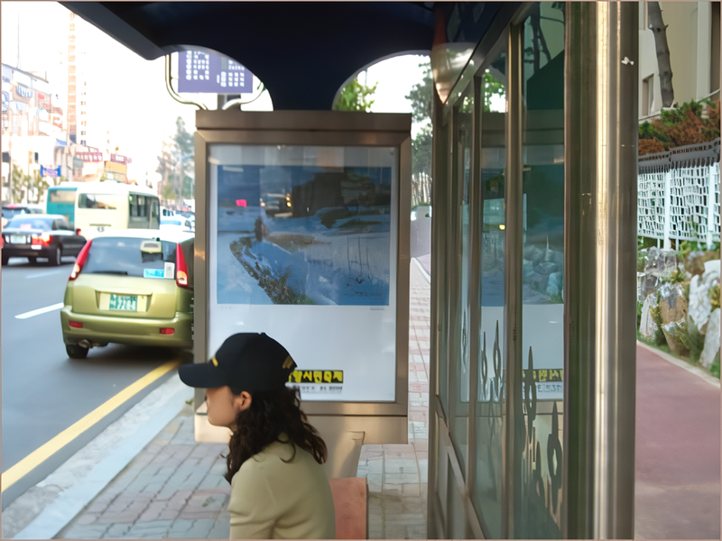
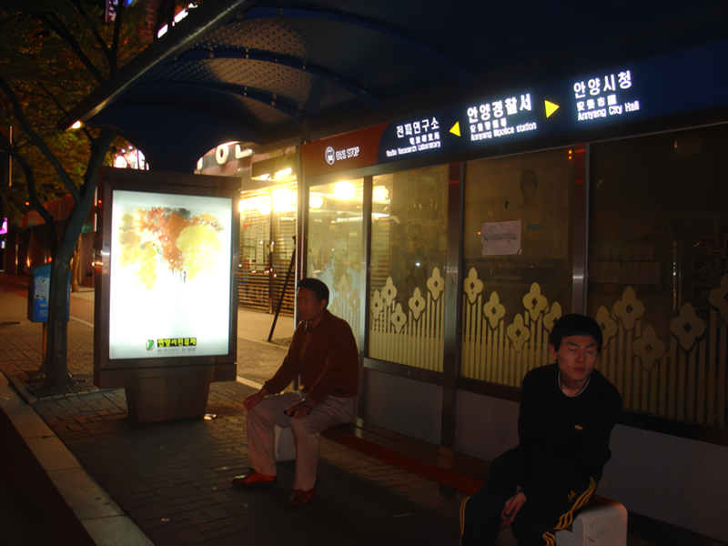
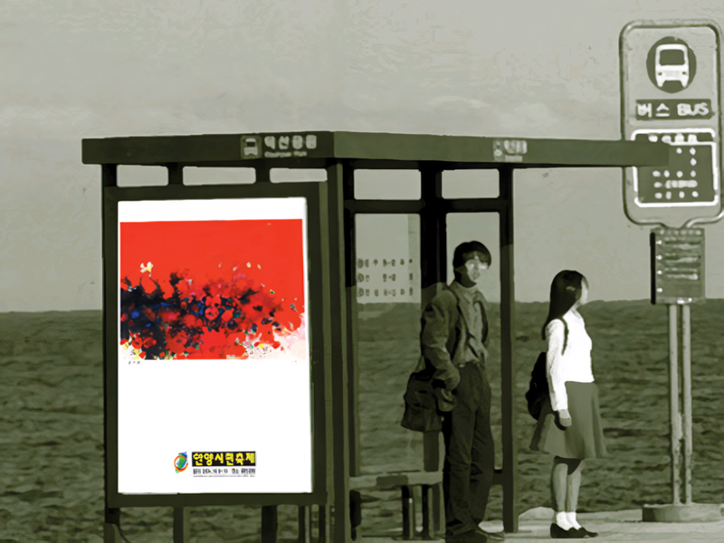

일 시 : 2004년 10월 1일 - 10월 30일
장 소 : 안양시내 전역 버스정류장 쉘터 20곳
참여작가 : 강영란, 금영보, 김석용, 김재홍, 김정옥, 김현철, 김혜환, 박찬응, 서명희, 신영옥, 오용길, 윤대라, 이기숙, 이상현, 정재석, 주운항, 지용수, 천기원, 추민해, 홍사영
주 최 : 안양시축제추진위원회
기 획 : supplement space STONE&WATER
디자인 : 아침미디어 | 작품설치 : 푸른커뮤니케이션
버스정류장마다 쉘터가 있는 곳이 많다. 쉘터라는 말이 낮설긴 해도 잠시 비를 피하는곳, 버스 대합실 등으로 해석하면 된다. 이 버스쉘터에 방치된 광고판을 이용하여 지역작가의 작품을 소개하고 축제홍보를 겸하는 일석이조의 전시를 마련했다. 모든 광고판을 다 사용할 수 없는 관계로 지역의 많은 작가들을 소개하지 못함이 아쉽지만 이를 계기로 한번쯤 전체 버스 정류장과 지역 작가들이 연결된 새로운 유형의 공공미술축제가 이루어지길 기대해 본다.
< 참여 작가와 작품 그리고 버스 정류장 위치 안내 >
금영보 - 호랭이(중앙로 안양여고 맞은편)
김정옥 - 잠에서 깨어나다(부흥동사무소 맞은편)
김재홍 - 대리1(관악로 진흥아파트앞1)
서명희 - Secret. F(흥안로 호계소방파출소앞)
윤대라 - 미인도(평촌 목련1단지)
주윤황 - 눈 내린날의 향기(관악로 낙천대아파트앞)
박찬응 - 일어서는 아이(평촌 목련7단지)
홍사영 - 花心(중앙로 서안양우체국 맞은편)
김현철 - 매화단(중앙로 화진가든 맞은편 서울정앞)
이낙현 - 여울(관악로 레미안아파트앞)
정재석 - 개인의 의미(평촌 범계중앞)
김석용 - 꽃을 따먹는 물고기(만안로 안양역앞)
지용수 - 그 호수위에 둥지를 틀고싶다(흥안로 롯데마트 맞은편)
강영란 - 태양의 엷은막2(관악로 낙천대아파트앞)
천기원 - 가을(관악로 레미안아파트앞)
오용길 - 가을서정(시민로 금강벤처텔앞)
이기숙 - 또 다른 자연(만안로 신필림후문옆)
추민애 - 무제(관악로 무궁화금호아파트앞)
*본 전시는 2004 안양시민 축제에 부쳐 기획되었습니다.
*본 작품들을 안양시민축제 홈페이지(http://festival2004.anyang.go.kr)와 스톤앤워터 홈페이지(www.stonenwater.org)에서도 볼 수 있습니다.
   